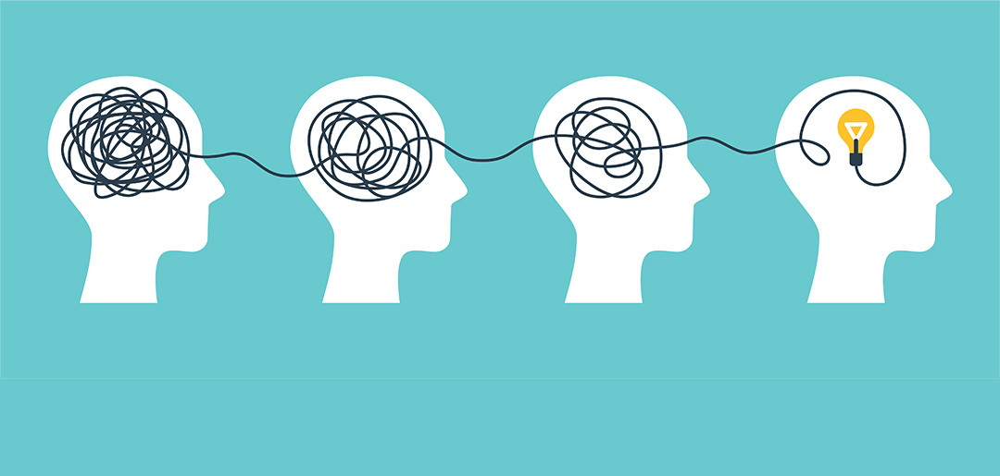

Four components

Decomposition: Breaking down a complex problem into multiple simple
sub-problems so that it is easily manageable,
grouping the
sub-problems and applying different expertise to different sub-problems.
Abstraction: For each decomposed sub-problem, we need to extract the key
information from the problem through
abstraction and ignore
irrelevant details. This way we can focus on the core of the problem and simplify the complexity.
Pattern Recognition: Identify the pattern of repeated recurrence in the
problem, analyze the characteristics of the problem,
and solve the
problem more efficiently
Algorithms: Solve a specific problem step-by-step using defined steps.
Mathematical ideas are also important. For
some problems with
high complexity, changing the structure of the algorithm or simplifying the steps of the algorithm can
greatly optimize
the efficiency of the algorithm.